*（1）**Mysql安装*
1）卸载Centos7自带的mariadb
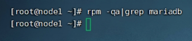
如果出现了mariadb-libs-5.5.64-1.el7.x86_64，输入rpm -e mariadb- libs-5.5.64-1.el7.x86_64 –nodeps,在输入rpm -qa|grep mariadb，即可
2）安装mysql
新建文件夹：mkdir /export/server/mysql
上传mysql-5.7.29-1.el7.x86_64.rpm-bundle.tar到上述文件夹下，解压tar xvf mysql-5.7.29-1.el7.x86_64.rpm-bundle.tar
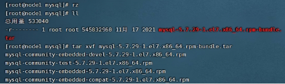
3）执行安装
yum -y install libaio
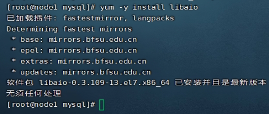
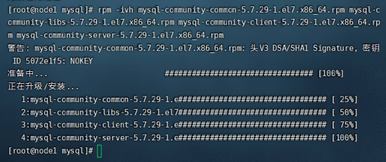
4）mysql初始化设置
初始化：mysqld –initialize
更改所属组：chown mysql:mysql /var/lib/mysql -R
启动mysql：systemctl start mysqld.service
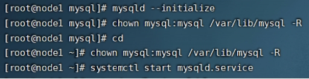
查看临时生成的root密码：cat /var/log/mysqld.log
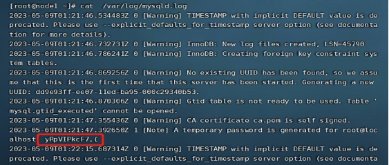
5）修改root密码 授权远程访问 设置开机自启动
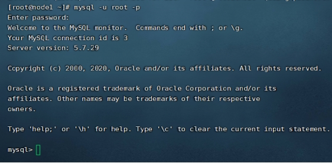
修改root密码 设置为hadoop

授权
use mysql;
GRANT ALL PRIVILEGES ON . TO ‘root‘@’%’ IDENTIFIED BY ‘hadoop’ WITH GRANT OPTION;
FLUSH PRIVILEGES;

mysql的启动和关闭 状态查看 （这几个命令必须记住）
systemctl stop mysqld
systemctl status mysqld
systemctl start mysqld
设置开机自动启动：systemctl enable mysqld
查看是否设置自动启动成功
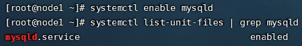
*（2）**H**ive**的安装*
1）上传安装包 解压
tar zxvf apache-hive-3.1.2-bin.tar.gz
ln -s apache-hive-3.1.2-bin hive
2）解决Hive与Hadoop之间guava版本差异
cd /export/server/hive/
rm -rf lib/guava-19.0.jar
cp /export/server/hadoop/share/hadoop/common/lib/guava-27.0-jre.jar
./lib/
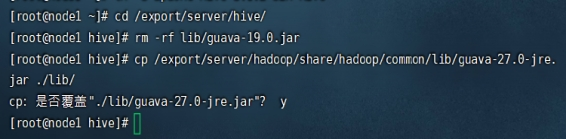
3）修改配置文件
hive-env.sh
cd /export/server/hive/conf
mv hive-env.sh.template hive-env.sh
vim hive-env.sh
export HADOOP_HOME=/export/server/hadoop
export HIVE_CONF_DIR=/export/server/hive/conf
export HIVE_AUX_JARS_PATH=/export/server/hive/lib
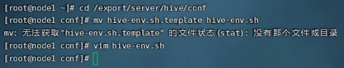
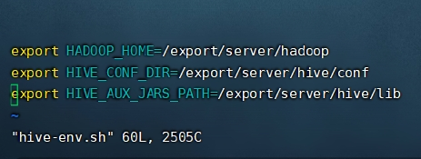
hive-site.xml
vim hive-site.xml
4）上传mysql jdbc驱动到hive安装包lib下
mysql-connector-java-5.1.32.jar
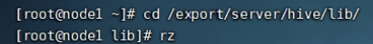
5）初始化元数据
cd /export/server/hive/
bin/schematool -initSchema -dbType mysql -verbos
初始化成功之后会在MySQL中创建74张表
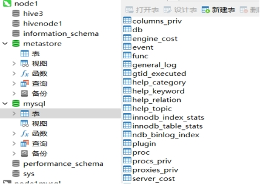
6）在hdfs创建hive存储目录（如存在则不用操作）
hadoop fs -mkdir /tmp
hadoop fs -mkdir -p /user/hive/warehouse
hadoop fs -chmod g+w /tmp
hadoop fs -chmod g+w /user/hive/warehouse
7）启动hive
*（**3）**启动metastore服务* 前台启动 关闭ctrl+c
/export/server/hive/bin/hive –service metastore
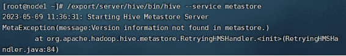
前台启动开启debug日志
/export/server/hive/bin/hive –service metastore –hiveconf hive.root.logger=DEBUG,console
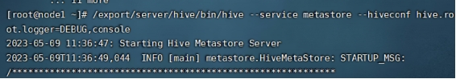
后台启动 进程挂起 关闭使用jps+ kill -9
nohup /export/server/hive/bin/hive –service metastore &
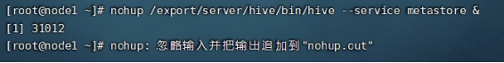
*（**4）**启动hiveserver2服务*
nohup /export/server/hive/bin/hive –service hiveserver2 &
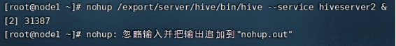
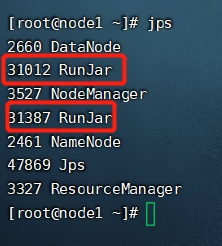
beeline客户端连接
拷贝node1安装包到beeline客户端机器上（node3）
scp -r /export/server/apache-hive-3.1.2-bin/ root@node3:/export/server/
*（5）**hive注释信息中文乱码解决*
以下sql语句均在mysql数据库中执行
use hivenode2;
show tables;
alter table hivenode2.COLUMNS_V2 modify column COMMENT varchar(256) character set utf8;
alter table hivenode2.TABLE_PARAMS modify column PARAM_VALUE varchar(4000) character set utf8;
alter table hivenode2.PARTITION_PARAMS modify column PARAM_VALUE varchar(4000) character set utf8 ;
alter table hivenode2.PARTITION_KEYS modify column PKEY_COMMENT varchar(4000) character set utf8;
alter table hivenode2.INDEX_PARAMS modify column PARAM_VALUE varchar(4000) character set utf8;